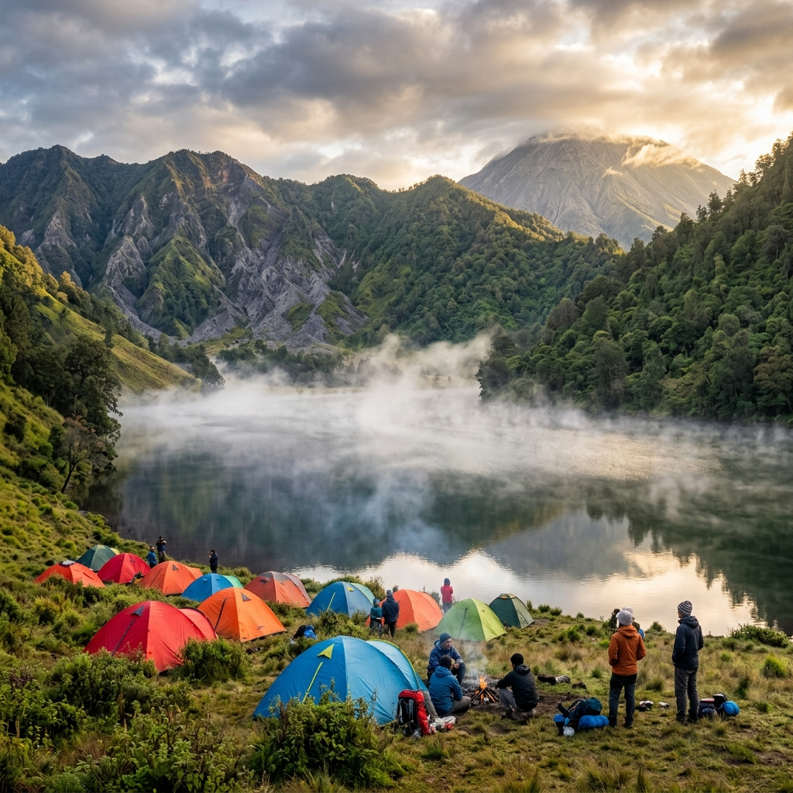

Area camping di savana Bromo — salah satu lokasi berkemah
paling memukau di kawasan Taman Nasional Bromo Tengger Semeru.
Area camping di savana Bromo — salah satu lokasi berkemah
paling memukau di kawasan Taman Nasional Bromo Tengger Semeru.
Camping di kawasan Taman Nasional Bromo Tengger Semeru memerlukan Simaksi resmi yang diajukan online, dengan kuota kunjungan terbatas dan biaya yang berbeda untuk kawasan Bromo dan jalur Semeru.
Apa Itu Taman Nasional Bromo Tengger Semeru?
Taman Nasional Bromo Tengger Semeru adalah kawasan konservasi seluas 50.276 hektar yang melindungi ekosistem gunung berapi dan danau vulkanik di empat kabupaten: Malang, Lumajang, Probolinggo, dan Pasuruan.
Menurut data Balai Besar TNBTS, kawasan ini menerima lebih dari 500.000 pengunjung per tahun dengan aktivitas utama berupa wisata Bromo dan pendakian Gunung Semeru. Kawasan ini juga merupakan rumah bagi masyarakat Tengger yang telah tinggal di lereng gunung berapi selama berabad-abad dengan tradisi dan adat istiadat yang masih terjaga.
Bagaimana Cara Mendapatkan Izin Camping di TNBTS?
Izin camping di TNBTS diperoleh melalui pengajuan Simaksi secara online melalui situs atau aplikasi resmi BBTNBTS, minimal 3 hari sebelum tanggal kunjungan.
Langkah pengajuan Simaksi:
- Akses platform reservasi resmi BBTNBTS melalui situs yang aktif pada tahun kunjungan
- Pilih jenis kunjungan: wisata Bromo atau pendakian Semeru
- Tentukan tanggal kunjungan dan jumlah anggota rombongan
- Unggah dokumen identitas yang diminta
- Lakukan pembayaran sesuai tarif yang berlaku
- Simpan bukti Simaksi untuk ditunjukkan saat memasuki kawasan
Simaksi hanya berlaku untuk tanggal yang tertera dan tidak dapat digunakan untuk tanggal lain. Jika cuaca buruk menyebabkan kawasan ditutup, pengelola biasanya memberikan opsi penjadwalan ulang.
Di Mana Lokasi Camping Terbaik di Kawasan TNBTS?
Kawasan TNBTS memiliki beberapa titik camping resmi yang masing-masing menawarkan pengalaman alam yang berbeda dan memiliki aturan berbeda pula.
Ranu Kumbolo
Ranu Kumbolo berada di ketinggian 2.400 meter di atas permukaan laut di jalur pendakian Semeru. Danau vulkanik ini adalah lokasi camping paling ikonik di seluruh Jawa Timur. Pengunjung yang berkemah di sini akan menikmati refleksi pegunungan di permukaan danau yang tenang, langit berbintang yang jernih, dan kabut pagi yang dramatis.
Camping di Ranu Kumbolo hanya diizinkan di area yang telah ditetapkan pengelola. Dilarang mendirikan tenda di tepi air atau melewati batas yang dipasang pengelola. Aktivitas memasak harus dilakukan di area yang telah ditentukan untuk mencegah kebakaran.

Berkemah di tepi Ranu Kumbolo — danau vulkanik di ketinggian 2.400 mdpl yang menjadi destinasi camping paling ikonik di Jawa Timur.Savana Bromo
Area savana di kawasan Gunung Bromo menawarkan pengalaman berkemah di bawah langit terbuka dengan latar Gunung Batok dan siluet Semeru di kejauhan. Camping di area ini lebih mudah diakses dibanding jalur Semeru karena tidak memerlukan pendakian panjang.
Pengunjung dapat mengakses area savana menggunakan jeep yang disewa dari Probolinggo atau Pasuruan. Area camping tersedia di titik-titik tertentu yang tidak menghalangi jalur kendaraan wisata.
Jalur Camp Site Semeru
Sepanjang jalur pendakian Semeru terdapat beberapa titik camp site resmi selain Ranu Kumbolo, termasuk area di sekitar Ranu Regulo dan beberapa shelter di jalur menuju puncak Mahameru. Pendaki yang bermalam di sini umumnya memanfaatkan camp site sebagai tempat istirahat sebelum melanjutkan perjalanan dini hari menuju puncak.
Berapa Biaya Resmi Camping di TNBTS?
Biaya resmi masuk kawasan TNBTS berbeda antara wisata Bromo dan pendakian Semeru, dengan tarif yang diperbarui secara berkala oleh pengelola.
Struktur biaya umum yang berlaku (dapat berubah, selalu cek situs resmi):
- Tiket masuk Bromo (weekday): Wisatawan nusantara lebih murah dibanding wisatawan mancanegara. Tarif akhir pekan umumnya lebih tinggi.
- Simaksi pendakian Semeru: Dikenakan per orang per hari selama di kawasan. Biaya terpisah dari tiket masuk Bromo.
- Biaya porter: Bukan tarif resmi TNBTS, ditentukan kesepakatan dengan porter lokal.
- Biaya jasa pemandu lokal: Bukan tarif resmi, berdasarkan negosiasi.
Selalu periksa tarif terbaru di situs resmi BBTNBTS sebelum berangkat karena tarif dapat berubah tanpa pemberitahuan sebelumnya ke publik luas.
Apa Aturan yang Wajib Ditaati Saat Camping di TNBTS?
Aturan kawasan TNBTS dirancang untuk melindungi ekosistem dan memastikan keselamatan pengunjung, dan pelanggaran dapat mengakibatkan pemblokiran akses permanen.
Aturan utama yang wajib dipatuhi:
- Dilarang membuang sampah dalam bentuk apapun di kawasan, termasuk sisa makanan organik
- Dilarang memetik, memotong, atau merusak tanaman apapun di kawasan
- Dilarang memberi makan satwa liar
- Dilarang mendirikan tenda di luar area yang telah ditetapkan
- Dilarang menyalakan api unggun di luar area yang diizinkan
- Wajib melapor kepada petugas saat memasuki dan meninggalkan kawasan
- Dilarang membawa dan mengonsumsi minuman beralkohol di kawasan konservasi
Camping di kawasan TNBTS adalah pengalaman alam terbaik yang ditawarkan Jawa Timur, namun memerlukan persiapan administrasi yang matang. Urus Simaksi jauh sebelum keberangkatan, patuhi semua aturan kawasan, dan selalu bawa pulang seluruh sampah yang dibawa masuk. Ketaatan terhadap aturan adalah cara terbaik menjaga keindahan kawasan ini untuk generasi berikutnya.
FAQ — Camping di Bromo Tengger Semeru